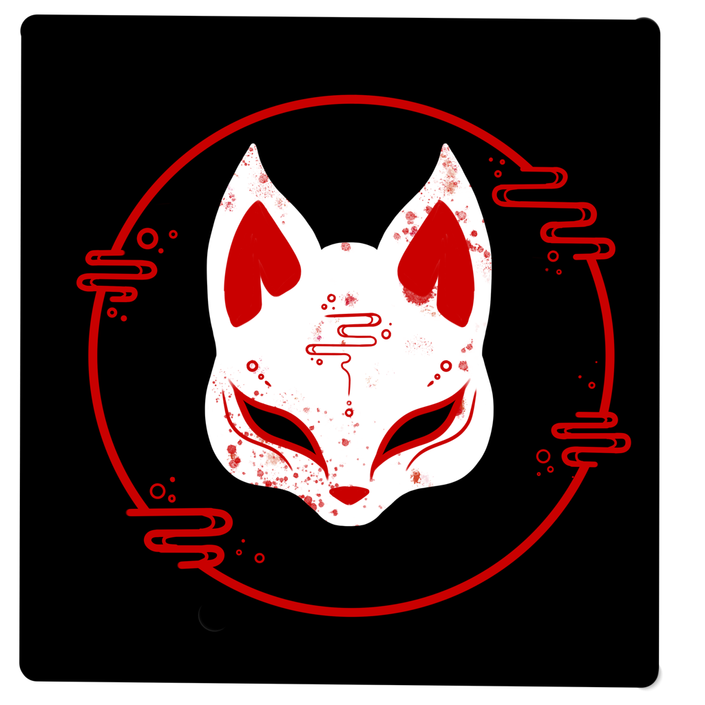

Afleveringen
-

S1E1. Koh Tao het eiland des doods
Een Duitse backpacker seksueel misbruikt, zeker 11 westerse touristen vermoord of vermist en toch is Koh Tao nog steeds een van de populairste vakantie bestemmingen van Thailand met 20 miljoen bezoekers per jaar.
-
S1E2. De Hello Kitty murder case
Hello Kitty, ze is lief, schattig en onschuldig Maar na dit verhaal wat zich afspeelt in China 1999 denk je daar waarschijnlijk voor goed anders over.
-
S1E3. De dodelijkste massamoord van Japan.
Kyoto Animation een anime studio opgericht in 1881 werd op de ochtend van 18 July 2019 doelwit van de dodelijkste massamoorden in Japan.
-
S1E4. Hwaseong seriemoordenaar
Lee Chung Jae, de persoon die tussen 1986 en 1994 in totaal 15 moorden heeft gepleegd en 30 vrouwen en meisjes heeft misbruikt. Een nachtmerrie die voor deze vrouwen en meisjes is uitgekomen.
-
S1E5. De moord op Junko Furuta
Een japans meisje die door de yakuza op brute wijze werd verkracht en vermoord. Zo'n 40 dagen werd zij vastgehouden door 4 jongens.
-
S1E6. Jung Myung-seok de religieuze leider
De leider van een religieuze sekte genaamd providence, die al meerdere verkrachtingen op zijn naam heeft staan. Verschuild achter deze onschuldige kerk